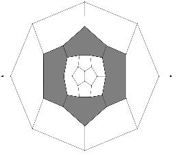
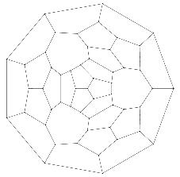

Elementary polycycles and Face regular maps
A (R,q)-polycycle is a plane graph, whose faces, besides some disjoint holes, are i-gons for i in R, and whose vertices, outside of holes, are q-valent. Such polycycle is called elliptic, parabolic or hyperbolic if 1/q + 1/r - 1/2 (where r is the maximum of R) is positive, zero or negative, respectively. Such polycycles can be uniquely decomposed into some simpler elementary polycycles. We classify the elementary elliptic (R,q)-polycycles, i.e. elementary ({2,3,4,5},3)-, ({2,3},4)- and ({2,3},5)-polycycles. This gives a very efficient proof and enumeration technique, which we applied to the enumeration of face regular maps.
A 3-valent torus or spherical map with p- and q-gonal faces is called pRi (respectively qRj) if every p-gonal (respectively q-gonal) face is adjacent to exactly i p-gonal (respectively j q-gonal) faces. We considered the question of existence, finiteness and classification for those classes of graphs.


L M. Deza, M. Dutour, M. Shtogrin, Elementary elliptic (R,q)-polycycles, Analysis of Complex Networks, From Biology to Linguistics, edited by M. Dehmer, F. Emmert-Streib, Wiley-Blackwell, Weinheim 2009, 351--376.
L M. Deza, M. Dutour Sikirić, Geometry of Chemical Graphs, Cambridge University Press, Series: Encyclopedia of Mathematics and its Applications (No. 119)
L M. Deza, M. Dutour, M. Shtogrin, Elliptic polycycles with holes, Russian Math. Surveys. 60 (2005) 349--351